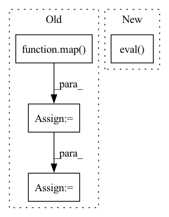

Pattern ID :33625

Before Change
// 画框设置不同的颜色
hsv_tuples = [(x / len(self.class_names), 1., 1.)
for x in range(len(self.class_names))]
self.colors = list(map(lambda x: colorsys.hsv_to_rgb(*x), hsv_tuples))
self.colors = list(
map(lambda x: (int(x[0] * 255), int(x[1] * 255), int(x[2] * 255)),
self.colors))
After Change
self.net = YoloBody(self.anchors_mask, self.num_classes)
device = torch.device("cuda" if torch.cuda.is_available() else "cpu")
self.net.load_state_dict(torch.load(self.model_path, map_location=device))
self.net = self.net.eval()
print("{} model, anchors, and classes loaded.".format(self.model_path))
if self.cuda:
In pattern: SUPERPATTERN
Frequency: 3
Non-data size: 4
Instances
Fragment ID: 96785956
Project Name: bubbliiiing/yolov4-pytorch
Commit Name: 34d2e3e10b07fd5a27a911b0800fb8354f1949a7
Time: 2021-09-21
Author: 47347516+bubbliiiing@users.noreply.github.com
File Name: yolo.py
M Class Name: YOLO
N Class Name: YOLO
M Method Name: generate(1)
N Method Name: generate(1)
M Parent Class: object
N Parent Class: object
M File Name: yolo.py
N File Name: yolo.py
M Start Line: 83
M End Line: 112
N Start Line: 94
N End Line: 98
'>
Before Change
net_G = define_generator(opt).to(device)
// get dummy input
lr_size = tuple(map(int, lr_size.split("x")))
dummy_input_dict = net_G.generate_dummy_input(lr_size)
for key in dummy_input_dict.keys():
dummy_input_dict[key] = dummy_input_dict[key].to(device)
After Change
start_time = time.time()
// ---
net_G.eval()
with torch.no_grad():
_ = net_G.step(*dummy_input_list)
torch.cuda.synchronize()
// ---
'>
Fragment ID: 96785959
Project Name: skycrapers/tecogan-pytorch
Commit Name: f73efdcac2c653069934846248cd712384d73e9c
Time: 2021-07-18
Author: dengjn@zju.edu.cn
File Name: codes/main.py
M Class Name: AnonimousClass
N Class Name: AnonimousClass
M Method Name: profile(3)
N Method Name: profile(3)
M Parent Class:
N Parent Class:
M File Name: codes/main.py
N File Name: codes/main.py
M Start Line: 198
M End Line: 238
N Start Line: 185
N End Line: 233
'>
Before Change
// 画框设置不同的颜色
hsv_tuples = [(x / len(self.class_names), 1., 1.)
for x in range(len(self.class_names))]
self.colors = list(map(lambda x: colorsys.hsv_to_rgb(*x), hsv_tuples))
self.colors = list(
map(lambda x: (int(x[0] * 255), int(x[1] * 255), int(x[2] * 255)),
self.colors))
After Change
device = torch.device("cuda" if torch.cuda.is_available() else "cpu")
self.net.load_state_dict(torch.load(self.model_path, map_location=device))
self.net = self.net.eval()
print("{} model, and classes loaded.".format(self.model_path))
if self.cuda:
'>
Fragment ID: 96785950
Project Name: bubbliiiing/centernet-pytorch
Commit Name: d8a34002c4045ca583b43a5f431513f8fd5ac37c
Time: 2021-10-09
Author: 47347516+bubbliiiing@users.noreply.github.com
File Name: centernet.py
M Class Name: CenterNet
N Class Name: CenterNet
M Method Name: generate(1)
N Method Name: generate(1)
M Parent Class: object
N Parent Class: object
M File Name: centernet.py
N File Name: centernet.py
M Start Line: 77
M End Line: 110
N Start Line: 102
N End Line: 114